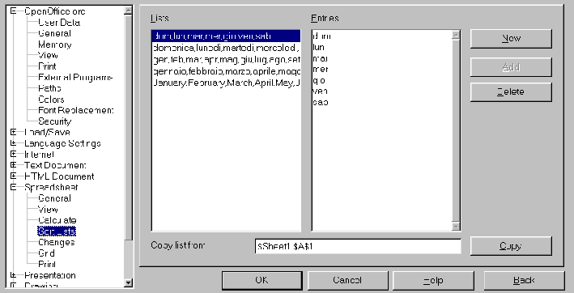

Table of Contents
These automations make data insertion easier in Calc. For instance, when you type Monday into a cell, there is a mechanism to allow inserting all the days of the week. The same mechanism works for month lists, as well. OpenOffice.org allows you to automatically insert the most used Sort Lists.
It's the same for a number or date series. With a single click or dragging action, you will be able to increase the series of numbers or years. Very practical, isn't it?
Here's an easy example: Type the word January in a cell, select the cell (it has to be surrounded from a thick rectangle with a small square on the lower right corner), and click on that square without releasing the mouse button and drag the mouse.
Magic! By dragging the mouse, the words are automatically displayed in a yellow
floating info box. Stop at March and the cells will be automatically updated.
These lists are already recorded in the software; there are a lot of them, and of course, you can record your own lists. Let's see how this is possible.

There are 4 default recorded lists. In the image above, there is an additional
custom list.
You can insert them from the left, right, upwards, or downwards. Of course, the order will be respected: If you start with Monday then drag your mouse upwards, the next displayed day will be Sunday. Same thing, if you drag your mouse to the left.
Now, you are able to use it in your sheets, in every way, being sure that the order will always be respected. In fact, you can start from whichever element of the list you choose.
If you don't wish to keep that sample list:
The AutoFill is similar to the procedure described above.
Wonderful! We have filled 8 cells only, but try to imagine if there were 3000. What a time savings!
Let's analyse the other filling options:
Note : As far as the Date
AutoFill is concerned, don't forget to format your cells with the format 'Date'
in the format 'Number' as they are by default; otherwise, you'll get
the wrong result.
After you have acknowledged your mistake after the AutoFill action, selecting
the related cell range and formatting it correctly will resolve the issue.
A faster trick is:
Author: Sophie Gautier
Thanks: Richard Holt, great proof reader and OOo contributor
Intgr by: Gianluca Turconi
Last modified: 10 February, 2002
Contacts:OpenOffice.org Documentation Project http://documentation.openoffice.org/index.html
Translation: Gianluca Turconi